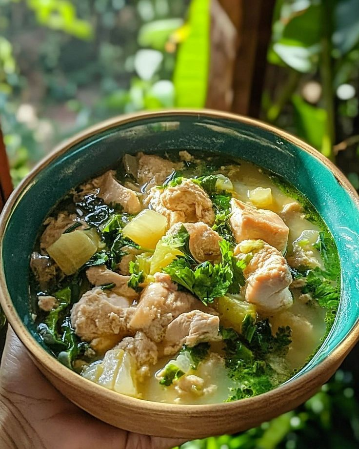

Step into a world of Filipino home cooking, where each recipe tells a story of flavors, family, and tradition.
From tangy soups to hearty stews, discover dishes that warm the heart and delight the taste buds.
Our Story
At Odin Recipes, we believe that cooking is more than just preparing meals but it's all about creating memories.
Each recipe here is carefully written to guide beginners and experienced cooks alike through the magic
of Filipino cuisine. Explore our collection and let every dish tell its own story.
Comforting Soups

Chicken Tinola - A comforting ginger-flavored chicken soup with vegetables